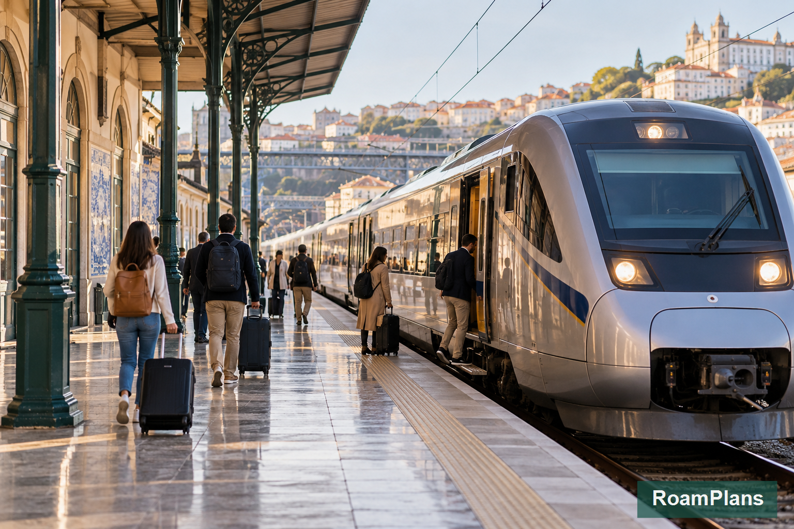
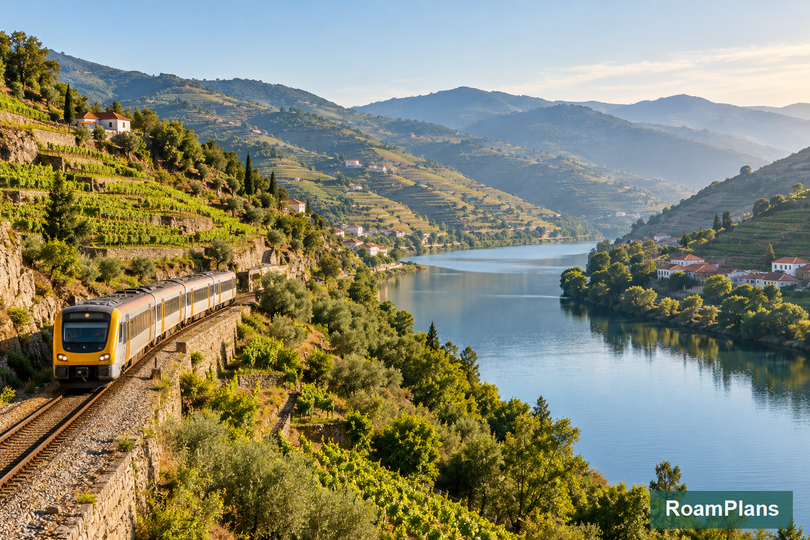
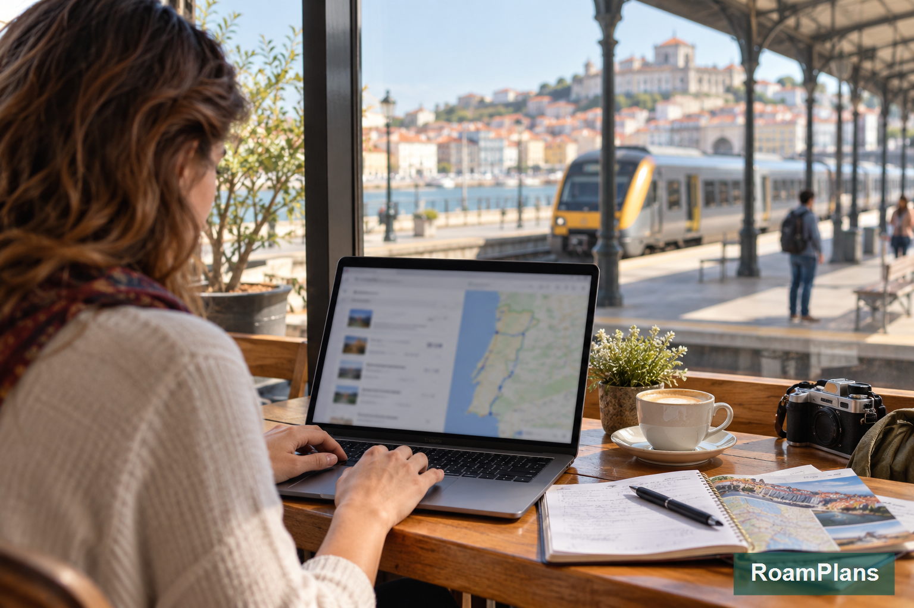

Portugal Train Travel Guide: Routes, Tickets and Booking Tips
Portugal's train system can make a first trip much easier, but the confusing part usually comes before you board. A search may show Alfa Pendular, Intercidades, Regional, InterRegional, and Urban trains for different routes. Lisbon and Porto also have several stations, so choosing the correct city is not always enough. You need the correct service, station, departure time, and ticket.
When I plan rail routes for RoamPlans, I start with where the train works especially well rather than trying to build an entire Portugal trip around rail. Lisbon, Porto, Coimbra, Sintra, Évora, Faro, and parts of the Douro Valley fit train travel well. Other places may need a bus, tour, or short car rental after the rail section. This guide focuses specifically on Portugal trains, so you can choose routes and book tickets without confusing one service type with another.
Portugal Train Travel at a Glance

For most first-time visitors, these are the rail connections worth knowing:
| Route | Useful Train Type | Best Use |
|---|---|---|
| Lisbon → Porto | Alfa Pendular / Intercidades | Main city-to-city route |
| Porto → Coimbra | Alfa Pendular / Intercidades | Fast north-central connection |
| Coimbra → Lisbon | Alfa Pendular / Intercidades | Main southbound route |
| Lisbon → Sintra | Lisbon Urban Train | Day trip |
| Lisbon → Évora | Intercidades | Alentejo day trip or overnight |
| Lisbon → Faro | Alfa Pendular / Intercidades | Algarve access |
| Porto → Régua / Pinhão / Pocinho | Regional / InterRegional | Douro Valley |
| Faro → eastern Algarve | Regional | Algarve towns |
| Tunes → Lagos | Regional | Western Algarve connection |
The most useful rail rule is simple:
Use long-distance trains between major cities, urban trains for nearby metropolitan trips, and regional trains for smaller destinations.
Who Operates Portugal's Main Trains?
Portugal's national passenger rail operator is CP — Comboios de Portugal.
For a normal first-time trip, CP is the system you will use for most rail travel.
Its main passenger services include:
- ✓Alfa Pendular
- ✓Intercidades
- ✓Regional
- ✓InterRegional
- ✓Lisbon Urban Trains
- ✓Porto Urban Trains
- ✓Coimbra-area services
These services are not interchangeable.
They differ in:
- ✓Speed
- ✓Stops
- ✓Ticket rules
- ✓Seat reservations
- ✓Routes
- ✓Comfort
- ✓Booking process
Knowing the basic difference makes route planning much easier.
Portugal Train Types Explained
Alfa Pendular
Alfa Pendular, commonly shown as AP, is Portugal's fastest regular long-distance train.
It operates on major routes and is especially useful for travel between large cities.
Typical first-time visitor routes can include:
- ✓Porto → Lisbon
- ✓Porto → Coimbra
- ✓Coimbra → Lisbon
- ✓Lisbon → Faro
- ✓Some north-to-south services
AP makes sense when saving time matters and its departure fits your schedule.
What Is Alfa Pendular Like?
It is the premium long-distance CP service.
You can expect:
- ✓Assigned seating
- ✓First and second class
- ✓Fewer stops than slower services
- ✓Faster travel between major stations
You do not need to choose AP for every long-distance trip.
Compare its departure time with Intercidades before booking.
Sometimes the slower train fits your day better.
Intercidades
Intercidades, commonly shown as IC, is Portugal's main intercity train service.
It connects many important destinations and is one of the services first-time visitors will see most often.
Useful routes can include:
- ✓Lisbon → Porto
- ✓Lisbon → Coimbra
- ✓Porto → Coimbra
- ✓Lisbon → Évora
- ✓Lisbon → Faro
- ✓Other major regional cities
IC trains are slower than Alfa Pendular on some routes because they may make additional stops.
That does not make them a poor choice.
Alfa Pendular vs Intercidades
For many visitors, the choice is straightforward.
| Factor | Alfa Pendular | Intercidades |
|---|---|---|
| Speed | Usually faster | Usually slower |
| Stops | Fewer | More |
| Assigned seat | Yes | Yes |
| Major city routes | Yes | Yes |
| Advance booking useful | Yes | Yes |
| Best choice | When schedule and speed fit | When timing or fare fits better |
Do not choose by train name alone.
Compare:
departure time → arrival time → station → price
The service that fits those four factors is usually the better option.
Regional Trains
Regional trains serve many routes where high-speed or intercity services are not the main option.
They become important once you move beyond Portugal's major city corridor.
Regional trains can be useful in:
- ✓Douro Valley
- ✓Algarve
- ✓Central Portugal
- ✓Alentejo
- ✓Northern Portugal
They normally make more stops than long-distance express trains.
That can make them slower, but they reach places an Alfa Pendular train does not.
When Will a First-Time Visitor Use a Regional Train?
Two strong examples are:
Douro Valley
and
parts of the Algarve
If you travel from Porto deeper into the Douro, regional rail becomes part of the experience.
If you continue from the main Algarve rail corridor toward Lagos or smaller towns, regional services may handle the final section.
InterRegional Trains
InterRegional, often shown as IR, sits between Regional and long-distance Intercidades services on selected routes.
It may:
- ✓Travel farther than a normal local regional service
- ✓Make fewer stops than some Regional trains
- ✓Connect regional centers
You do not need to search specifically for IR trains.
If one appears in the CP timetable and fits your route, compare it with the other available services.
Urban Trains
Urban trains serve metropolitan areas rather than long cross-country routes.
First-time travelers are especially likely to use them around:
- ✓Lisbon
- ✓Porto
The best-known visitor example is:
Lisbon → Sintra
This is not an Alfa Pendular or Intercidades trip.
It uses Lisbon's urban rail network.
That distinction matters because ticketing and validation work differently from long-distance reserved-seat trains.
Do Alfa Pendular and Intercidades Have Reserved Seats?
Yes.
These long-distance services use seat reservations.
Your ticket is tied to a specific service and seat.
That means you should check:
- ✓Travel date
- ✓Train number
- ✓Departure time
- ✓Station
- ✓Carriage
- ✓Seat
before boarding.
Do not treat an AP or IC ticket like an open urban transit ticket.
Do Regional Trains Use Reserved Seats?
Regional and urban services work differently from AP and IC.
For many regional trips, you are not booking a specific assigned seat in the same way.
This makes short and regional rail travel more flexible, but you still need the correct valid ticket for your route.
Ticket rules can differ by service, so read the conditions shown during purchase.
Best Portugal Train Routes for First-Time Visitors
Several rail routes are especially useful for tourists.
These deserve more attention because they connect directly with the Portugal itineraries already covered on RoamPlans.
Lisbon to Porto by Train
This is one of Portugal's most useful rail routes.
For most first-time visitors, train travel is a strong way to connect the country's two largest cities.
You will normally compare:
Alfa Pendular
and
Intercidades
Both can work.
Main Lisbon Stations for Porto Trains
Long-distance services can use major Lisbon stations such as:
Lisboa Oriente
Oriente is a major national transport hub.
It connects with:
- ✓Long-distance trains
- ✓Metro
- ✓Local transport
- ✓Other rail services
Lisboa Santa Apolónia
Santa Apolónia sits closer to Lisbon's historic center and is also used by selected long-distance services.
Do not assume your train departs from whichever station is closest to your hotel.
Read the ticket.
Main Porto Station
For major long-distance services, the station you are most likely to use is:
Porto Campanhã
Campanhã is Porto's principal long-distance railway hub.
This matters because:
Porto Campanhã and Porto São Bento are not the same station.
São Bento is more central for sightseeing.
Campanhã handles major long-distance connections.
Always check which one appears on your ticket.
Porto to Coimbra by Train
Rail is a natural choice between Porto and Coimbra.
Alfa Pendular and Intercidades services operate along Portugal's main north–south corridor.
For long-distance rail, pay particular attention to:
Coimbra-B
This is the station used by major through services.
It is not located beside every historic Coimbra attraction.
Plan the final connection from the station to:
- ✓University area
- ✓Hotel
- ✓Historic center
Do not calculate the trip using only the time shown between Porto and Coimbra-B.
Include your final local transfer.
Coimbra to Lisbon by Train
This is another straightforward long-distance rail route.
You can compare AP and IC departures based on:
- ✓Coimbra departure time
- ✓Lisbon arrival station
- ✓Total travel time
- ✓Fare
If your Lisbon hotel is closer to one arrival station than another, that can matter more than a small difference in train time.
Lisbon to Sintra by Train
Sintra is one of Portugal's easiest major day trips to do by rail.
You use Lisbon's urban train network rather than long-distance AP or IC services.
The rail section takes you into Sintra town.
However, reaching Sintra station does not mean you have reached:
- ✓Pena Palace
- ✓Moorish Castle
- ✓Every major estate
You still need local transport or walking for the hilltop areas.
That is why a Sintra day should be planned as:
Lisbon → Sintra station → local transport → attractions
rather than only looking at train time.
Do You Need to Reserve a Lisbon–Sintra Train?
This urban service does not work like an AP or IC reserved-seat train.
You normally do not reserve a specific seat for a standard Sintra trip.
Urban tickets also need to be validated correctly before travel where required.
Lisbon to Évora by Train
Évora can be reached from Lisbon by Intercidades services.
This makes rail a practical option for:
- ✓Full day trip
- ✓Overnight stay
- ✓Longer Alentejo itinerary
For a day trip, the timetable matters more than simply knowing a train exists.
Look at:
arrival time in Évora
and
last useful return option
before building your sightseeing plan.
A cheap ticket is not useful if the schedule leaves you with too little time in the city.
Lisbon to the Algarve by Train
Long-distance trains connect Lisbon with the Algarve.
Faro is one of the main rail hubs in southern Portugal.
Depending on the service, travelers may use:
- ✓Alfa Pendular
- ✓Intercidades
The right choice depends on your final Algarve destination.
If you are staying in Faro, the rail route is relatively simple.
If you are continuing farther west or east, another rail or ground connection may be required.
Getting to Lagos by Train
Lagos is not simply the next long-distance stop after Lisbon.
Train travel toward Lagos normally involves reaching the Algarve rail network and using a regional connection for the western section.
Tunes is an important connection point for travelers continuing toward Lagos on many rail itineraries.
Before booking, check the complete Lisbon-to-Lagos route, not just the first train.
Look for:
- ✓Connection station
- ✓Transfer time
- ✓Final arrival time
- ✓Number of changes
This is where route planning matters more than choosing the fastest first train.
Algarve Regional Trains
The Algarve has its own regional rail services connecting several towns.
Rail can help with parts of the coast, but the railway does not place you directly beside every beach or attraction.
That means a train-based Algarve trip still needs local planning.
Use rail where it connects your actual bases well.
Do not build a beach route around the railway if every final stop then requires a difficult transfer.
Porto to the Douro Valley by Train

The Douro Line is one of Portugal's most interesting regional rail routes.
From Porto, trains continue through places such as:
- ✓Régua
- ✓Pinhão
- ✓Tua
- ✓Pocinho
For many first-time visitors, Pinhão is a practical Douro stop.
Why Take the Douro Train?
The train can give you:
- ✓River views
- ✓Terraced vineyard scenery
- ✓A car-free Douro day
- ✓Access to Pinhão
- ✓Flexible independent travel
It works best when your plan is simple.
For example:
Porto → Pinhão → lunch → riverfront or winery → Porto
Trying to connect several distant estates without a car or tour can make the day difficult.
Should You Go All the Way to Pocinho?
You can.
The railway continues beyond Pinhão toward Pocinho.
Going farther gives you more time beside the upper Douro and additional scenery.
However, a first-time day trip does not need to reach the end of the line.
If your priority is:
- ✓Pinhão
- ✓Winery
- ✓Lunch
- ✓Short river experience
stopping there may give you a more useful day.
Portugal Train Stations You Should Know
You do not need to memorize every station in Portugal.
These are the names most likely to matter on a classic first trip:
| City / Region | Station to Know |
|---|---|
| Lisbon | Lisboa Oriente |
| Lisbon | Lisboa Santa Apolónia |
| Lisbon–Sintra route | Rossio / relevant Lisbon urban station |
| Porto | Porto Campanhã |
| Central Porto | São Bento |
| Coimbra | Coimbra-B |
| Alentejo | Évora |
| Algarve | Faro |
| Western Algarve connection | Tunes |
| Western Algarve | Lagos |
| Douro Valley | Régua |
| Douro Valley | Pinhão |
| Upper Douro | Pocinho |
Always use the station shown on your actual ticket.
City names alone are not enough.
How to Buy Portugal Train Tickets

For most travelers, the simplest option for eligible CP services is the official CP website or CP app.
Depending on the service, tickets may also be sold through:
- ✓Station ticket offices
- ✓Ticket machines
- ✓Other approved sales channels
Buying directly from CP also makes it easier to see the operator's own timetable, fare conditions, and ticket details.
Can You Buy CP Tickets Online?
Yes.
CP's online system currently supports ticket sales for services including:
- ✓Alfa Pendular
- ✓Intercidades
- ✓Regional
- ✓InterRegional
- ✓Selected urban services
The exact purchasing method can differ by network.
For Lisbon urban travel, some local tickets use a different system from normal reserved long-distance bookings.
How Far in Advance Can You Book Portugal Trains?
At the time of writing, CP allows many online rail tickets to be purchased up to 60 days before travel.
That does not mean you must book every train two months early.
Your booking priority should depend on the service.
Book Earlier for:
- ✓Alfa Pendular
- ✓Intercidades
- ✓Popular departure times
- ✓Busy travel dates
- ✓Trips where your itinerary depends on one specific train
More Flexibility May Be Possible for:
- ✓Regional routes
- ✓Urban services
- ✓Short local rail trips
Do not pre-book every small train simply because your international flights are already confirmed.
Are Portugal Train Tickets Cheaper in Advance?
They can be.
CP offers limited advance-purchase promotional fares on Alfa Pendular and Intercidades services.
These discounted seats are limited.
Buying earlier can therefore reduce the fare on some long-distance trains.
However, the lowest promotional ticket may come with different change or refund conditions.
Do not look only at price.
Also check:
- ✓Flexibility
- ✓Departure time
- ✓Refund conditions
- ✓Exchange conditions
A slightly higher fare may be worth it if your plans are not fixed.
The Best Train Booking Strategy
For a first Portugal trip, book in this order:
1. Fix Your Hotel Bases
Know where you will sleep.
2. Identify Major Long-Distance Rail Days
Examples:
- ✓Porto → Coimbra
- ✓Coimbra → Lisbon
- ✓Lisbon → Faro
3. Book the Important AP or IC Trains
Prioritize services where the departure time affects the rest of the itinerary.
4. Leave Simple Local Rail More Flexible
A normal Lisbon–Sintra trip does not need the same booking strategy as a Lisbon–Porto long-distance train.
5. Recheck the Timetable Before Travel
Rail schedules and temporary service changes can occur.
Check your train again shortly before the travel day.
This gives you a rail plan that is organized without locking every local movement months ahead.
Portugal Train Ticket Types Explained
Once you know your route, the next step is choosing the right ticket.
Portugal rail tickets are not all the same.
The main difference is between:
- ✓Reserved long-distance tickets
- ✓Regional tickets
- ✓Urban tickets
- ✓Discounted Promo tickets
- ✓Return tickets
A Lisbon-to-Porto ticket works differently from a normal Lisbon-to-Sintra ticket.
That distinction matters when you book, change, validate, or miss a train.
Standard Alfa Pendular and Intercidades Tickets
Alfa Pendular and Intercidades tickets are issued for a specific train.
Your booking normally shows:
- ✓Date
- ✓Departure time
- ✓Origin station
- ✓Destination station
- ✓Train
- ✓Carriage
- ✓Seat
- ✓Travel class
You should board the train shown on the ticket.
Do not assume that a ticket for a 10:00 a.m. service can automatically be used on the 11:00 a.m. train.
If your plans change, deal with the ticket before the change deadline rather than simply boarding another service.
Portugal Promo Train Tickets
CP sells discounted Promo tickets for selected Alfa Pendular and Intercidades seats.
These can offer large savings when purchased ahead of travel.
Current Promo pricing can reach:
- ✓Up to 56% off when bought 5–7 days ahead
- ✓Up to 65% off when bought 8 or more days ahead
The number of discounted seats is limited.
Once the Promo allocation for a train is gone, you may see a higher fare.
When Should You Look for Promo Fares?
Start checking as soon as your major travel dates are fixed.
They make the most sense for routes such as:
- ✓Lisbon → Porto
- ✓Porto → Coimbra
- ✓Coimbra → Lisbon
- ✓Lisbon → Faro
These are trips where you may already know your travel day well in advance.
Is the Cheapest Promo Ticket Always the Best Choice?
No.
A low fare is useful only if the train time fits your schedule.
Before booking, check:
- ✓Hotel checkout
- ✓Station location
- ✓Travel time to the station
- ✓Arrival time
- ✓Hotel check-in
- ✓What you plan to do after arrival
Saving money on a very early train may have little value if it creates an expensive taxi ride or poor night's sleep.
Can Promo Tickets Be Changed?
Current CP rules allow Promo tickets to be changed, subject to the ticket conditions and available seats.
If the new train has no suitable Promo fare, you may need to pay the difference to the available fare.
Can Promo Tickets Be Refunded?
Promo tickets are generally not refundable under the current fare rules.
This is the main tradeoff.
You receive a lower price in exchange for less flexibility.
If your schedule may change, compare the discounted fare with a more flexible ticket before buying.
Portugal Return Train Tickets
CP also offers return-ticket pricing on eligible routes.
For qualifying trips of at least 91 km, a return ticket can currently receive a discount when the outward and return sections meet the fare conditions.
This may help on trips where you know both travel dates.
Examples can include:
- ✓Lisbon ↔ Porto
- ✓Lisbon ↔ Évora
- ✓Other longer round trips
However, discounts generally cannot be stacked.
A Promo fare and a return discount are not simply added together.
Compare the final price shown during booking.
One-Way or Return Ticket?
Use a one-way ticket when your route keeps moving forward.
For example:
Porto → Coimbra → Lisbon
Buying a return ticket makes little sense because you are not going back to Porto.
A return ticket fits better for routes such as:
Lisbon → Évora → Lisbon
or another trip where you return to the same origin.
For first-time Portugal itineraries with several overnight bases, one-way tickets are often more natural.
First Class vs Second Class on Portugal Trains
The class names depend on the service.
On Alfa Pendular, you may see:
- ✓Comfort Class
- ✓Tourist Class
On Intercidades, the booking system can show:
- ✓1st Class
- ✓2nd Class
For most visitors, the lower class is completely suitable for normal travel.
Paying more becomes a personal comfort choice rather than a requirement.
Alfa Pendular Tourist Class
Tourist Class is the standard option.
It still gives you:
- ✓Reserved seat
- ✓Reclining seat
- ✓Power socket
- ✓Wi-Fi
- ✓Luggage storage areas
- ✓Access to onboard facilities
For a Lisbon-to-Porto trip, this is enough for many travelers.
Alfa Pendular Comfort Class
Comfort Class is the higher category.
Choose it if:
- ✓You value extra comfort
- ✓You prefer the higher service category
- ✓The fare difference is reasonable for you
- ✓You have a longer rail day
Do not feel that Comfort Class is needed simply because you are traveling internationally.
Tourist Class is designed for normal long-distance travel.
Intercidades First vs Second Class
Intercidades also offers different travel classes.
Second Class is the standard choice.
First Class may suit travelers who want greater comfort or prefer the higher category for a longer trip.
The exact onboard setup can vary by train.
Base your decision on:
- ✓Price difference
- ✓Travel duration
- ✓Personal comfort
- ✓Available departure
Do not choose a poor departure time just to obtain a higher class.
Do Portugal Long-Distance Trains Have Assigned Seats?
Yes, Alfa Pendular and Intercidades use assigned seats.
Your ticket will show the allocated seat.
Look for details such as:
- ✓Carriage number
- ✓Seat number
When the train arrives, find the correct carriage before settling in.
This saves you from needing to move after another passenger arrives.
Can You Choose Your Own Seat?
Seat selection can depend on the sales channel and booking setup.
If the system provides seat choice, use it if you have a preference.
You may care about:
- ✓Window
- ✓Aisle
- ✓Traveling beside another person
If you are booking for two people together, make sure the booking has placed you together before completing payment.
Traveling as a Couple
Book both passengers in the same transaction when possible.
This gives the booking system a better chance of allocating seats together.
Check the seat numbers before completing the purchase.
Do not wait until boarding to discover that your seats are in different parts of the carriage.
What Information Is on a Portugal Train Ticket?
Before travel, check these fields:
Date
Make sure you selected the correct calendar day.
This sounds obvious, but date errors can happen when booking several train sections at once.
Origin
Check the exact station.
Lisboa Oriente and Lisboa Santa Apolónia are different stations.
Destination
Do the same at arrival.
Porto Campanhã is not the same as Porto São Bento.
Departure Time
Use the time printed on your ticket.
Do not rely on a screenshot from an earlier timetable search.
Train Type
Look for abbreviations such as:
- ✓AP
- ✓IC
- ✓R
- ✓IR
- ✓Urban service
Train Number
This helps identify the correct service on station displays.
Carriage and Seat
These matter on reserved long-distance trains.
Why Station Names Matter So Much
A common first-time rail mistake is thinking only about cities.
Portugal's major cities can have several stations.
That means this search:
Lisbon to Porto
is only the beginning.
You should also know:
Which Lisbon station?
and
Which Porto station?
Lisboa Oriente vs Santa Apolónia
Both can appear on long-distance Lisbon rail schedules.
Lisboa Oriente
Useful for:
- ✓Long-distance rail
- ✓Metro connections
- ✓Transfers between transport modes
- ✓Travelers staying closer to eastern Lisbon
Santa Apolónia
Useful for:
- ✓Selected long-distance services
- ✓Travelers staying closer to Alfama and parts of central Lisbon
Neither is automatically better.
Your hotel location and exact train decide which is easier.
Porto Campanhã vs São Bento
This distinction causes confusion for many first-time visitors.
Porto Campanhã
Campanhã is the main long-distance station.
It handles major services connecting Porto with places such as Lisbon and Coimbra.
Porto São Bento
São Bento is much closer to the historic tourist center.
It also serves rail traffic, but it is not the station to assume for every long-distance train.
If your Lisbon-to-Porto ticket says Campanhã, go to Campanhã.
Do not simply type “Porto train station” into a map app and choose the most famous station.
Coimbra-B and Central Coimbra
Major long-distance services commonly use Coimbra-B.
This station is outside the upper historic university area.
After arrival, you still need to continue toward your accommodation or sightseeing area.
Build that final transfer into your schedule.
A train arriving at Coimbra-B at 12:00 does not mean you will be standing at the University of Coimbra at 12:05.
Rossio and the Lisbon–Sintra Route
For a Sintra day, station choice works differently from the long-distance network.
Rossio is a useful central Lisbon station for Sintra services.
Depending on where you stay, another connection may also make sense.
The main point is that Sintra uses Lisbon's urban rail network rather than the normal AP or IC booking pattern.
Do You Need to Validate Portugal Train Tickets?
It depends on the ticket and service.
This is an area where travelers should not apply one rule to every train.
Alfa Pendular and Intercidades
These are booked for a specific train and seat.
Your ticket identifies the service you are using.
Lisbon and Porto Urban Trains
Urban transport uses a different ticketing system.
Tickets loaded onto reusable cards may require validation before travel.
If your ticket or card needs validation, do it before entering the train system.
Do not assume that purchasing the ticket alone has completed the process.
What Does Validation Mean?
Validation records the start of a trip on the transport system.
You normally use the card or ticket at the relevant validator or gate.
If you are uncertain, look for station signs or ask staff before boarding.
It is easier to confirm the process before the train arrives than deal with an invalid ticket later.
Can You Buy a Ticket on the Train?
Do not make onboard purchase your normal plan.
Buy your ticket before boarding whenever sales facilities are available.
For major AP and IC trips, reserve the ticket before reaching the platform.
For regional or smaller stations, circumstances can differ, but you should still check the route's ticket rules before travel.
How Early Should You Arrive at the Station?
You do not need airport-style arrival times for normal Portugal trains.
For an unfamiliar long-distance station, give yourself enough time to:
- ✓Find the platform
- ✓Check the departure board
- ✓Buy food or water if needed
- ✓Reach the correct carriage
- ✓Handle luggage
For a first AP or IC trip, arriving around 20–30 minutes before departure can make the process much easier.
This is a planning buffer, not a universal CP check-in requirement.
Does Portugal Have Train Check-In Like an Airport?
No normal airport-style check-in is required for standard domestic CP train travel.
You do not need to arrive hours before departure.
You need:
- ✓Correct ticket
- ✓Correct station
- ✓Correct platform
- ✓Enough time to board
This is one reason rail works well between Portuguese cities.
Can You Show a Portugal Train Ticket on Your Phone?
Digital tickets can be used for eligible bookings.
If you buy through the CP digital system, keep the ticket available on your phone.
Before leaving your hotel:
- ✓Charge the phone
- ✓Make the ticket easy to open
- ✓Keep any required identification available
A screenshot or another offline backup can also help if mobile data fails.
Do You Need ID on Portugal Trains?
Some tickets and discounts are linked to passenger information.
Keep the identification used for booking available where required.
For an international visitor, your passport is the most obvious official travel document, though carrying requirements depend on your situation and ticket.
Make sure the passenger name is entered correctly when purchasing a named ticket.
Can You Change a Portugal Train Ticket?
Current CP rules allow eligible Alfa Pendular, Intercidades, Regional, and InterRegional tickets to be changed before departure, subject to conditions.
For many eligible tickets, changes can be made up to 15 minutes before the train begins its trip.
The new service still needs available space where reservation applies.
If the new fare costs more, you may need to pay the difference.
Why the 15-Minute Rule Matters
Do not wait until the train has left to decide that you wanted a later service.
If your plans change:
- ✓Open your booking.
- ✓Check whether it can be changed.
- ✓Make the change before the deadline.
- ✓Confirm the new ticket details.
Once the deadline passes, your options become much more limited.
What Happens if You Miss Your Train?
If you miss a reserved AP or IC service, do not assume your ticket automatically transfers to the next train.
Your original ticket was tied to a specific service.
Go to CP staff or a ticket office and check your available options.
This is why I avoid booking an inflexible long-distance train immediately after an international flight.
Flight delays and border processing are difficult to predict.
Train After Landing: How Much Buffer Should You Leave?
If you land in Lisbon and plan to continue directly to Porto, Coimbra, or the Algarve, do not build the booking around the perfect flight arrival.
You still need time for:
- ✓Border processing where applicable
- ✓Baggage collection
- ✓Airport-to-station transport
- ✓Finding the platform
For many first-time visitors, spending the first night in the arrival city can be simpler.
If you do continue by rail the same day, choose a departure with a generous buffer.
Can You Get a Refund?
Refund rules depend on the ticket.
For eligible unused Alfa Pendular, Intercidades, Regional, and InterRegional tickets, current rules allow refund requests before the train's departure deadline.
Promo tickets are a major exception because they are generally not refundable.
Urban tickets also use different rules.
Read the conditions before buying if flexibility matters.
Should You Buy the Cheapest Fare if Your Flight Arrives That Day?
Usually, I would be cautious.
A cheap Promo ticket may save money.
But if your flight is delayed and the fare cannot be refunded, the saving can disappear.
For a train connected closely to a flight, flexibility can be worth more than the lowest price.
Luggage Rules on Portugal Trains
Portugal train travel is easier when you pack light.
CP currently allows passengers to carry normal hand luggage under its conditions, provided it can be stored safely and does not inconvenience other passengers.
On Alfa Pendular and Intercidades, standard luggage storage includes:
- ✓Overhead racks
- ✓Larger luggage areas around parts of the carriage
You remain responsible for your own bags.
How Much Luggage Should You Bring?
For practical travel, I recommend:
One manageable suitcase + one personal bag
rather than several large pieces.
This makes it easier to:
- ✓Board
- ✓Leave the train
- ✓Move through stations
- ✓Use stairs
- ✓Reach hotels
Portugal rail travel itself may be comfortable, but your suitcase still has to move between the train and your accommodation.
Official CP Luggage Allowance
Under current CP rules, passengers on domestic services can carry one main item of hand luggage free of charge, subject to space and safety conditions.
Normal smaller personal items such as handbags and laptops are treated separately under the published rules.
On Alfa Pendular and Intercidades, additional luggage beyond the standard allowance can be treated as excess baggage and may carry an onboard charge.
Pack around what you can comfortably manage.
Where Do You Put a Large Suitcase?
Larger luggage normally goes in the available luggage areas rather than on your seat.
Once onboard:
- ✓Find your seat
- ✓Identify suitable luggage space
- ✓Keep valuables with you
- ✓Do not block aisles or doors
Do not expect airline-style checked baggage service.
You are responsible for handling your own suitcase.
Keep Valuables With You
Do not leave these inside a large suitcase away from your seat:
- ✓Passport
- ✓Wallet
- ✓Phone
- ✓Laptop
- ✓Medication
- ✓Other high-value items
Keep them in your personal bag.
Your large suitcase should contain items that would be less difficult to replace.
Can You Store Luggage at Portugal Train Stations?
Some major stations have automatic lockers.
Current CP information lists lockers at locations including:
- ✓Lisboa Oriente
- ✓Rossio
- ✓Cais do Sodré
- ✓Sete Rios
- ✓Porto Campanhã
- ✓Porto São Bento
- ✓Coimbra-B
Availability can change, so check before building a day around luggage storage.
Where available, lockers can be useful for a transfer-day stop without immediately checking into a hotel.
Is Coimbra a Good Luggage-Storage Stop?
Coimbra-B currently appears among stations with automatic lockers.
That may help travelers who want to break a rail trip between Porto and Lisbon.
However, do not assume a locker will always be free when you arrive.
An overnight stay remains easier if Coimbra is an important part of your route.
Food and Drinks on Long-Distance Trains
Alfa Pendular has onboard café/bar facilities.
Service availability can differ by train and operating conditions.
For a longer rail trip, I still prefer boarding with:
- ✓Water
- ✓Small snack
especially if your travel time overlaps with a meal.
Do not depend completely on onboard food for a tight schedule.
Wi-Fi and Charging on Alfa Pendular
Alfa Pendular currently advertises:
- ✓Free Wi-Fi
- ✓Power sockets at seats
That can be useful for:
- ✓Checking hotel details
- ✓Working
- ✓Charging your phone
- ✓Reviewing your arrival route
Do not make your entire travel plan dependent on onboard internet.
Save important hotel and ticket information offline before boarding.
Can You Work on Portugal Trains?
Yes, long-distance trains can be useful work time.
For travelers carrying a laptop, AP or IC is often more convenient than driving because you can use travel time for:
- ✓Work
- ✓Reading
- ✓Planning
- ✓Rest
Keep headphones with you and avoid relying on continuous Wi-Fi for work that cannot tolerate interruptions.
Booking Portugal Trains for a Multi-City Trip
Do not book the whole country as one complicated chain unless the system specifically supports what you need.
For a route such as:
Porto → Coimbra → Lisbon → Algarve
treat each major travel day as its own booking decision.
That makes it easier to:
- ✓Choose the best time
- ✓Compare fares
- ✓Change one section
- ✓Match hotel check-in
Your itinerary controls the rail bookings, not the other way around.
Example Booking Order for a 10-Day Trip
Suppose your route is:
Porto → Lisbon → Algarve
Book in this order:
First
Confirm accommodation dates.
Second
Book Porto → Lisbon.
Third
Book Lisbon → Algarve.
Fourth
Handle local routes such as Sintra separately.
This prevents you from buying trains before your overnight plan is stable.
Best Time of Day to Travel Between Cities
I usually prefer a morning departure that is not extremely early.
For example:
- ✓Breakfast
- ✓Hotel checkout
- ✓Train
- ✓Arrival around midday or early afternoon
This lets the transfer day remain useful.
Late-evening trains can also work if you prefer keeping a full sightseeing day in the departure city.
Choose based on what the train does to the whole day, not simply the ticket price.
Is a Portugal Rail Pass Worth It?
Portugal has a rail pass aimed at visitors who do not live in the country.
The Portugal Rail Pass allows unlimited CP train travel on selected travel days within one month.
It covers:
- ✓Alfa Pendular
- ✓Intercidades
- ✓Regional
- ✓InterRegional
- ✓Urban trains
You can currently choose:
- ✓3 travel days within one month
- ✓7 travel days within one month
The travel days do not need to be consecutive.
Current Portugal Rail Pass Prices
For adults, current prices are:
| Rail Pass | 2nd Class | 1st Class |
|---|---|---|
| 3 days in one month | €73 | €109 |
| 7 days in one month | €129 | €179 |
These prices can change, so check the current fare before your trip.
Who Can Buy the Portugal Rail Pass?
It is aimed at travelers who do not live in Portugal.
That makes it relevant for visitors from the United States and other countries.
The pass is personal and cannot be shared with another traveler.
How the Portugal Rail Pass Works
Having the pass does not mean you simply walk onto every long-distance train.
For trains that require a specific ticket or reservation, you still need the correct travel document before boarding.
For example, on reserved-seat services you need the required seat booking for that train.
This is one reason a rail pass still requires some trip planning.
Is the Portugal Rail Pass Cheaper Than Normal Tickets?
Sometimes.
Do not assume it automatically saves money.
Compare the pass price against the point-to-point tickets you expect to buy.
A Rail Pass May Make Sense If You Have:
- ✓Several long-distance rail days
- ✓Lisbon, Porto, Coimbra, and Algarve rail sections
- ✓Multiple urban rail trips
- ✓A schedule where flexibility matters
- ✓Several expensive same-day train segments
Point-to-Point Tickets May Be Better If You Have:
- ✓Only one or two long-distance trains
- ✓Access to low Promo fares
- ✓A fixed itinerary
- ✓Mostly short local train trips
A traveler using only:
Lisbon → Porto
and:
Lisbon → Sintra
probably does not need a national rail pass.
A traveler using seven separate rail-heavy days may get more value from one.
Portugal Tourist Train Pass
CP also offers regional tourist passes for specific networks.
These are different from the national Portugal Rail Pass.
They can be useful if you spend several days using trains inside one region.
Lisbon Urban Train Tourist Pass
This covers eligible Lisbon Urban Train routes for:
- ✓1 day
- ✓3 days
It can be useful if you expect several rail trips around the Lisbon urban network.
That may include areas served by lines toward:
- ✓Sintra
- ✓Cascais
- ✓Other Lisbon suburban rail destinations
Do not buy it automatically for one Sintra return trip.
Compare the pass price with the trips you will actually take.
Porto Urban Train Tourist Pass
A similar pass exists for Porto Urban Trains.
It can cover lines toward destinations such as:
- ✓Braga
- ✓Guimarães
- ✓Aveiro
- ✓Marco
- ✓Other eligible urban routes
This becomes more useful if Porto is your base for several rail day trips.
Algarve Tourist Train Pass
The Algarve also has a tourist rail option covering Regional and InterRegional trains for multiple days.
This may suit travelers who plan several Algarve rail trips and do not want to rent a car.
It will not solve every Algarve transport need because many beaches and smaller places are not beside railway stations.
Rail Pass or Promo Tickets?
These two options suit different travelers.
| Your Travel Style | Better Starting Option |
|---|---|
| Fixed dates + early booking | Promo tickets |
| Several rail-heavy days | Check rail pass |
| Only 1–2 long trips | Point-to-point |
| Need more flexibility | Compare rail pass |
| Mainly urban trains | Regional tourist pass may fit |
| Mixed train + car trip | Point-to-point often simpler |
Do the calculation before buying.
Rail passes are useful tools, not automatic bargains.
Example Rail Plan for a 7-Day Portugal Trip
Suppose your route is:
Lisbon → Sintra → Porto → Douro Valley
Your rail sections may include:
Lisbon → Sintra
Urban train.
Lisbon → Porto
Alfa Pendular or Intercidades.
Porto → Pinhão
Regional or InterRegional service depending on schedule.
In this case, compare individual tickets with any pass you are considering.
You may find normal tickets simpler because only one section is a major long-distance reservation.
Example Rail Plan for a 10-Day Portugal Trip
Suppose your route is:
Porto → Lisbon → Sintra → Algarve
You may use:
- ✓Porto → Lisbon: AP or IC
- ✓Lisbon → Sintra: Urban
- ✓Lisbon → Algarve: AP or IC
- ✓Algarve regional connection
This is a more rail-heavy route.
Now a pass comparison becomes more useful.
Still check advance Promo fares first.
Example Rail Plan for a 14-Day Portugal Trip
A rail-based two-week route may include:
Porto → Coimbra → Lisbon → Sintra → Évora → Algarve
That can create several eligible travel days.
This is the type of itinerary where comparing the Portugal Rail Pass with separate fares is worth the effort.
Do not decide only from the number of destinations.
Calculate the actual rail days.
Train Connections: How Much Time Should You Leave?
A connection can make or break a rail day.
If one ticket involves changing trains, do not assume a very short transfer will feel comfortable.
Consider:
- ✓Platform change
- ✓Luggage
- ✓Stairs
- ✓Station size
- ✓Train delay
- ✓Whether you know the station
A connection that looks possible on paper may still feel stressful with two suitcases.
Same-Ticket Connections
If the booking system sells your route as a connected itinerary, follow the connection details shown.
Still pay attention to the transfer time.
Know which station you are using and how many changes are involved.
Separate Tickets
Be more careful when you create your own connection using separate tickets.
If the first train is delayed and you miss a separately booked train, your options may depend on the conditions of each ticket.
Leaving extra time can protect the rest of your day.
Changing Trains at Tunes for Lagos
Travelers heading from Lisbon toward Lagos may encounter a connection at Tunes.
Do not look only at the Lisbon departure.
Check:
- ✓Arrival at Tunes
- ✓Connection time
- ✓Regional train departure
- ✓Final Lagos arrival
Your real route is:
Lisbon → Tunes → Lagos
not simply:
Lisbon → Algarve
This becomes especially relevant if you are arriving late in the day.
Changing Stations Inside the Same City
A route can sometimes involve different stations within one city or metropolitan area.
Never assume a connection happens on the same platform just because both station names contain Lisbon or Porto.
Read the itinerary carefully.
If a route requires local transport between stations, include that time before buying.
What Happens During a Train Delay?
Rail delays can happen.
If a delay affects another booked service, speak with CP staff as early as possible.
Keep:
- ✓Ticket
- ✓Booking information
- ✓Train number
- ✓Connection details
easy to access.
Do not wait until you have missed the next train to ask what your options are.
Should You Book the Last Train of the Day?
Only when the schedule genuinely fits.
The last service leaves little room if:
- ✓Your earlier activity runs late
- ✓You reach the wrong station
- ✓Local transport is delayed
- ✓You misunderstand the platform
For key transfer days, I prefer leaving another realistic service after the one I plan to take where possible.
That gives the schedule some breathing room.
Train Travel With Children
Rail can work very well for families because adults do not need to focus on driving.
Children can:
- ✓Sit
- ✓Eat
- ✓Read
- ✓Rest
- ✓Use a tablet
- ✓Look outside
The main challenge is usually luggage.
Keep family bags organized so you are not managing many separate pieces at every station.
Book Family Seats Together
For reserved long-distance trains, book family members in the same transaction where possible.
Check the seat allocation before paying.
A family may prefer sitting together over saving a small amount on a less suitable train.
Portugal Trains for Travelers With Mobility Needs
CP provides assistance for passengers who need extra help boarding or leaving trains.
Its support system includes an Integrated Mobility Service for qualifying passengers.
The exact assistance available can depend on:
- ✓Station
- ✓Train
- ✓Mobility equipment
- ✓Required support
Travelers using wheelchairs or mobility scooters should check whether the required stations support the service they need.
Plan Accessibility Before Booking
Do not judge accessibility only from the train type.
You also need to check:
- ✓Departure station
- ✓Arrival station
- ✓Platforms
- ✓Lifts
- ✓Boarding access
- ✓Final transport to the hotel
A station may be accessible while the route from the station to your accommodation is difficult.
Lisbon, Porto, Coimbra, and Sintra can also involve hills after you leave the railway.
Traveling With a Stroller
A stroller creates similar planning needs.
Consider:
- ✓Station stairs
- ✓Train boarding
- ✓Luggage
- ✓Crowded urban services
- ✓Historic streets after arrival
A lighter stroller may make multi-city rail travel easier.
Do not pack more family equipment than you can move between trains and hotels.
Can You Bring a Bicycle on Portugal Trains?
Bicycle rules depend on the train and service.
Some CP services allow bicycles under specific conditions.
Space can be limited.
If cycling is part of your Portugal trip, check the exact bicycle conditions for every train before booking.
Do not arrive at a long-distance service with a bicycle and assume it can always board.
Traveling During Busy Periods
Demand can rise around:
- ✓Summer travel
- ✓Holidays
- ✓Long weekends
- ✓Festivals
- ✓Major events
If your itinerary depends on one specific AP or IC train, book earlier.
A flexible traveler can choose another departure.
A traveler with a hotel transfer, tour, or flight connection has less room to change plans.
Morning vs Afternoon Trains
There is no universal best departure time.
Morning Trains Work Well When:
- ✓You are changing hotels
- ✓You want a useful afternoon after arrival
- ✓Hotel checkout is early
Afternoon Trains Work Well When:
- ✓You want another morning in the departure city
- ✓Travel time is short
- ✓Your next hotel allows later arrival
Evening Trains Work Well When:
- ✓You want almost a full day before moving
- ✓You are comfortable arriving after dark
- ✓Your accommodation has reliable late check-in
Choose the departure that makes the whole travel day useful.
Should You Take the Fastest Train?
Not always.
Imagine these options:
Train A: 7:00 a.m., fastest
Train B: 9:30 a.m., 20 minutes slower
If Train B allows:
- ✓Breakfast
- ✓Normal checkout
- ✓Public transport to the station
it may be the better option.
Twenty minutes saved on the train can be meaningless if the earlier departure makes the morning harder.
How to Plan a Portugal Rail Day
Use this process for every major train day.
Step 1: Check Hotel Checkout
Know when you need to leave the room.
Step 2: Check the Station
Use the exact station name.
Step 3: Calculate Hotel-to-Station Time
Add a buffer.
Step 4: Compare Train Options
Look at:
- ✓Fare
- ✓Duration
- ✓Class
- ✓Arrival station
- ✓Number of changes
Step 5: Check Hotel Arrival
Find out:
- ✓Check-in time
- ✓Luggage storage
- ✓Distance from station
Step 6: Decide What You Can Realistically Do After Arrival
Do not schedule a major timed attraction 20 minutes after the train arrives.
Your rail day includes more than the train itself.
Common Portugal Train Travel Mistakes
Mistake 1: Going to the Wrong Station
Knowing the city is not enough.
Better Approach
Check the full station name the night before.
Mistake 2: Confusing Campanhã With São Bento
Both are in Porto, but they serve different roles.
Better Approach
Follow the station printed on your ticket.
Mistake 3: Forgetting Coimbra-B Is Outside the Main Historic Area
Arriving at Coimbra-B does not place you at the university.
Better Approach
Plan the final local transfer.
Mistake 4: Treating Sintra Like a Long-Distance Train
The Lisbon–Sintra service uses the urban network.
Better Approach
Follow the local ticket and validation system rather than AP/IC rules.
Mistake 5: Not Validating an Urban Ticket
A purchased urban ticket may still need validation.
Better Approach
Use the validator or access gate before travel where required.
Mistake 6: Buying the Cheapest Promo Ticket Without Checking Flexibility
The savings can be good, but the ticket may be non-refundable.
Better Approach
Use Promo fares when your schedule is firm.
Mistake 7: Booking a Tight Train After an International Flight
Flight delays can cause you to miss a fixed service.
Better Approach
Leave a large buffer or spend the first night in your arrival city.
Mistake 8: Packing Too Much
Large luggage makes every station transfer harder.
Better Approach
Bring bags you can lift and move yourself.
Mistake 9: Looking Only at Rail Time
A three-hour train can become a five-hour hotel-to-hotel transfer.
Better Approach
Add station access and hotel transfer time.
Mistake 10: Assuming Every Algarve Town Has Easy Rail Access
The Algarve railway helps, but it does not reach every beach or resort directly.
Better Approach
Check the final local connection before choosing accommodation.
Mistake 11: Trying to Use Train Travel for Every Destination
Rail is strong on many routes but weak for some rural or remote stops.
Better Approach
Use another transport type where the railway stops being practical.
Mistake 12: Not Checking the Schedule Again
Timetables and service conditions can change.
Better Approach
Recheck important trains shortly before travel.
Final Portugal Train Booking Checklist
Before buying a long-distance ticket, confirm:
Route
- ✓Correct departure city
- ✓Correct arrival city
- ✓Correct station names
Date
- ✓Correct travel date
- ✓Correct day of week
Train
- ✓AP, IC, R or IR
- ✓Direct or connection
- ✓Total travel time
Fare
- ✓Standard or Promo
- ✓Refund conditions
- ✓Change conditions
Seat
- ✓Correct class
- ✓Carriage
- ✓Seat assignment
- ✓Seats together if traveling with others
Travel Day
- ✓Hotel checkout time
- ✓Time to reach station
- ✓Arrival transport
- ✓Hotel check-in
Luggage
- ✓Bags you can manage
- ✓Valuables in personal bag
- ✓Enough time to board calmly
Checking these details before payment can prevent most first-time rail problems.
Frequently Asked Questions About Portugal Train Travel
Are trains in Portugal easy for tourists?
Yes. Major visitor routes such as Lisbon, Porto, Coimbra, Sintra, Évora, Faro, and the Douro Valley can work well by rail. The main task is choosing the correct service and station.
What is the fastest train in Portugal?
Alfa Pendular is Portugal's fastest regular long-distance passenger service and connects several major cities along the main north–south corridor.
Is Alfa Pendular better than Intercidades?
Alfa Pendular is usually faster. Intercidades may offer a better departure time or fare. Compare the complete schedule rather than choosing only by train type.
How early can I book Portugal train tickets?
Many eligible CP online tickets can currently be bought up to 60 days before departure.
Should I book Lisbon to Porto in advance?
It is a good idea if you want a specific departure or hope to get an advance Promo fare. Reserved long-distance trains can also become busier on popular dates.
Do Portugal trains have assigned seats?
Alfa Pendular and Intercidades use assigned seats. Regional and urban services follow different seating and ticket rules.
Can I use my phone for a Portugal train ticket?
Digital tickets are available for eligible bookings. Keep the ticket accessible and your phone charged.
Do I need to validate my train ticket?
Lisbon and Porto urban train tickets and passes require validation where applicable before the trip. Long-distance reserved tickets work differently.
Is there a Portugal rail pass for tourists?
Yes. Non-residents can buy a Portugal Rail Pass for three or seven travel days within one month. Compare its cost with separate tickets before buying.
Is the Portugal Rail Pass worth it?
It can be useful for a rail-heavy itinerary with several travel days. Travelers using only one or two long-distance trains may spend less with individual tickets, especially when Promo fares are available.
Can I take a train from Lisbon to the Algarve?
Yes. Long-distance rail connects Lisbon with destinations such as Faro, while western Algarve destinations such as Lagos can require an additional regional connection.
Can I take a train from Porto to the Douro Valley?
Yes. The Douro Line serves places including Régua and Pinhão, making a car-free Douro day possible.
Can I take a direct train from Lisbon to Lagos?
Rail trips to Lagos commonly require an Algarve regional connection. Check the complete timetable rather than looking only at the first southbound train.
How much luggage can I take on Portugal trains?
CP allows normal personal luggage subject to its baggage rules and available space. Keep your bags manageable because you are responsible for moving and storing them.
Are Portugal train stations close to city centers?
It depends. Some are very central, while others require another local connection. Porto Campanhã and Coimbra-B are two examples where you should plan what happens after the train arrives.
Are trains better than buses in Portugal?
For major rail-connected cities, trains can be very convenient. Buses become useful when rail does not serve the destination directly. Choose based on the complete route rather than the transport type alone.
Conclusion
When I build a Portugal train plan, I focus on three details before price: the exact station, the correct service, and what happens after arrival. Once those are clear, choosing between Alfa Pendular, Intercidades, Regional, and Urban trains becomes much easier. Advance fares can save money, but only when the train fits your real itinerary.
Portugal rail travel works especially well for first-time routes connecting Lisbon, Porto, Coimbra, Sintra, Évora, the Douro Valley, and parts of the Algarve. Book the long-distance trains that matter, keep simpler local trips flexible, and use another transport option when rail stops being practical. That gives you the benefits of train travel without forcing the entire Portugal trip to follow the railway.